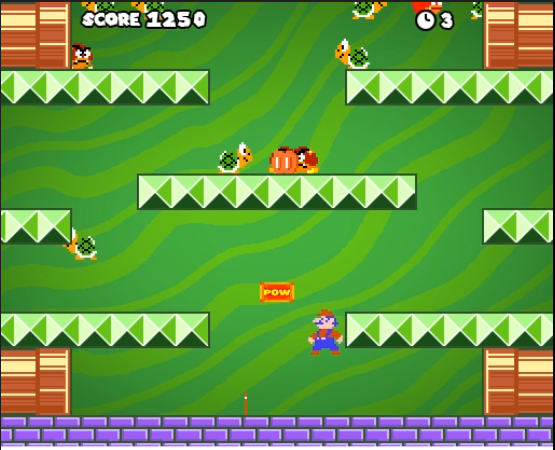

Last Updated: April, 2021
Mario. Bros (Clone) is my reimagining of the first arcade
version of the original Mario Bros. game released by Nintendo
I developed this project for the second semester of my first
year on Staffordshire University's Computer Games Programming
course. You can find more information on that on my
main website.
When I started development, I knew I wanted to add some extra features to the game modernise it in some ways. Firstly, I updated the graphics. I created my own textures based off of the original textures, in Photoshop, and put them into the game. As you can see, each level has its own colour scheme, different from the last. This helps to make each level feel distinct from one another. Another difference between levels is that as each level the enemies spawn faster and faster, making the game more challenging. There are two main enemy types, based off of the original. The Koopas simply walk left and right down the path until they reach the bottom of the screen. The Goombas behave similarly, however when they are damaged they will become angry and their movement speed increases. I thought this would make for a fun twist on the original enemy design.
The most significant change I made, when compared to the original, is the addition of a multiplayer mode. At the main menu, the player can select whether they wish to play singleplayer or with a friend. This is great for split-screen multiplayer gameplay, especially if the player is struggling with singleplayer mode and needs some help. The core elements of the game remain the same while the Player 1 takes control of Mario and Player 2 takes control of Luigi. I made sure to include a highscore system too, in order to give players a reason to come back to the game. The game is given a lot more replay value when there is incentive to come back and beat your highscores.